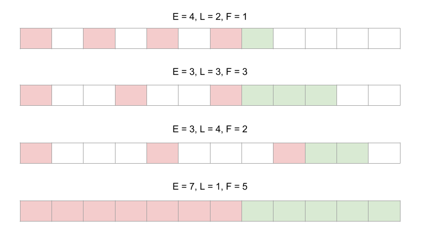
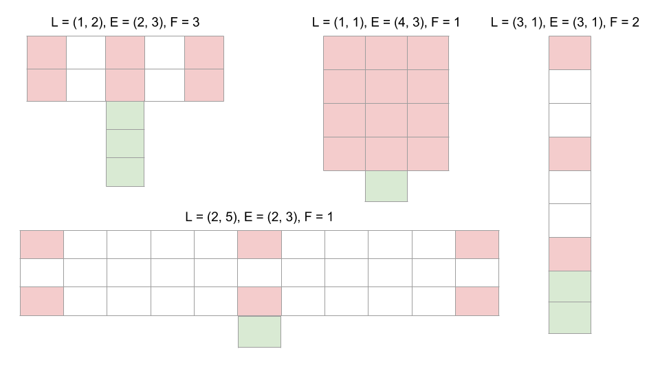

Embedding¶
Embedding the time series, spatio-temporal series, or a spatial pattern is required before attempting to forecast or understand the dynamics of the system. I would suggest reading this post by a professor at emory to understand which lag and embedding dimension is appropriate.
As a quick recap, the lag is picked as the first minimum in the mutual information and the embedding dimension is picked using a false near neighbors test. In practice, however, it is acceptable to use the embedding that gives the highest forecast skill. Through experimentation, an embedding dimension of 3 is a good value to begin with and an embedding dimension of (2,3) for 2d systems.
1D Embedding¶
An example of a 1D embedding is shown in the gif below. It shows a lag of 2, an embedding dimension of 3 and a forecast distance of 2. Setting the problem up this way allows us to use powerful near neighbor libraries such as the one implemented in scikit-learn.

This is the same thing as rebuilding the attractor and seeing where the point traveled to next. This just makes our lives a little easier.
Using this package, this would be represented as:
E = edm.Embed(X)
lag = 2
embed = 3
predict = 2
X,y = E.embed_vectors_1d(lag, emb, predict)
More examples of 1d embeddings are shown below. E is the embedding dimension, L is the lag, and F is the prediction distance.
2D Embedding¶
An example of a 2D embedding is shown in the gif below. It shows a lag of 2 in both the rows and columns, an embedding dimension of two down the rows, and an embedding dimension of three across the columns.

This would be implemented in code as:
E = edm.Embed(X)
lag = (2,2)
emb = (2,3)
predict = 2
X,y = E.embed_vectors_2d(lag, emb, predict)
More examples of 2d embeddings are shown below. L is the lag, E is the embedding dimension, and F is the prediction distance.
